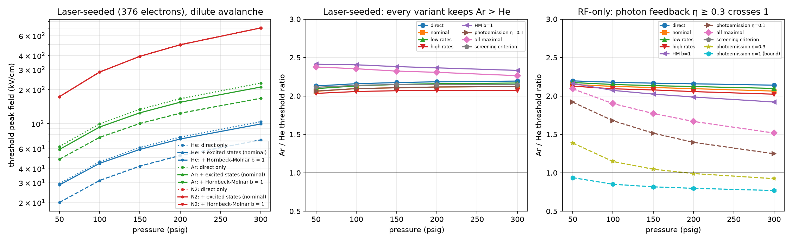

1 / Pure-gas avalanche
No excited-state channel reverses the ordering
Stepwise ionization, pooling, excimers, Hornbeck–Molnar ionization and recombination keep Ar/He = 2.0–2.4 (laser) and 1.9–2.2 (RF-only). N₂ needs 6–11× helium's field, matching the observation. Argon spends its energy on excimers that radiate rather than ionize.